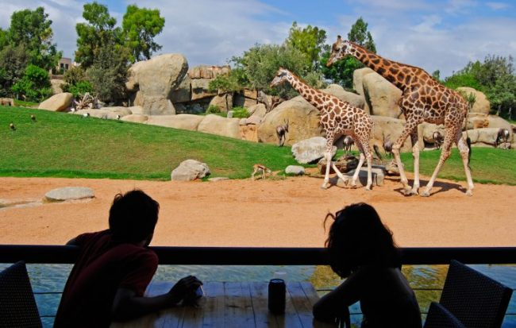
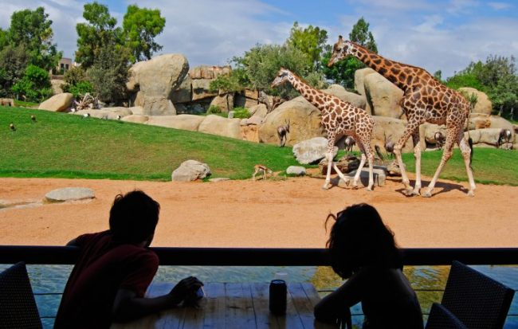

Historia Las Fallas Gastronomía La Albufera
La historia de la ciudad de Valencia abarca desde la época anterior a la fundación formal de la ciudad cuando la región ya estaba habitada por pueblos prerromanos hasta la actualidad.
Gracias a la fértil huerta sobre la que se sustenta, los alrededores de Valencia fueron ya una zona de alta densidad humana antes de su fundación en el siglo II a. C. por los romanos.
Desde entonces, la ciudad ha constituido uno de los mayores núcleos urbanos de la península ibérica.
Recientemente se han encontrado restos arqueológicos de los siglos IV y III a.C.
Estos restos son las referencias
más antiguas de las que tenemos constancia y demuestran que ya antes de la fundación de la ciudad romana, en lo que hoy es la ciudad de Valencia
y su huerta, ya existía actividad humana.
Los restos han aparecido en la zona de las calles Ruaya y Sagunto,1 lugar por donde posteriormente pasaría la Vía Augusta, de la que tenemos referencias, e incluso podemos observarla junto a la catedral de Valencia, en el museo de la Almoina. En las excavaciones se han encontrado restos que corresponden a una construcción hidráulica de planta rectangular, quizás una balsa, (según la concejal Alcón), que ha aparecido repleta de cerámicas íberas y púnicas. También se ha localizado un pozo que contenía ánforas que podrían proceder de Ibiza, de Cádiz o del norte de África, y una moneda cartaginesa de la época Bárcida.


 
